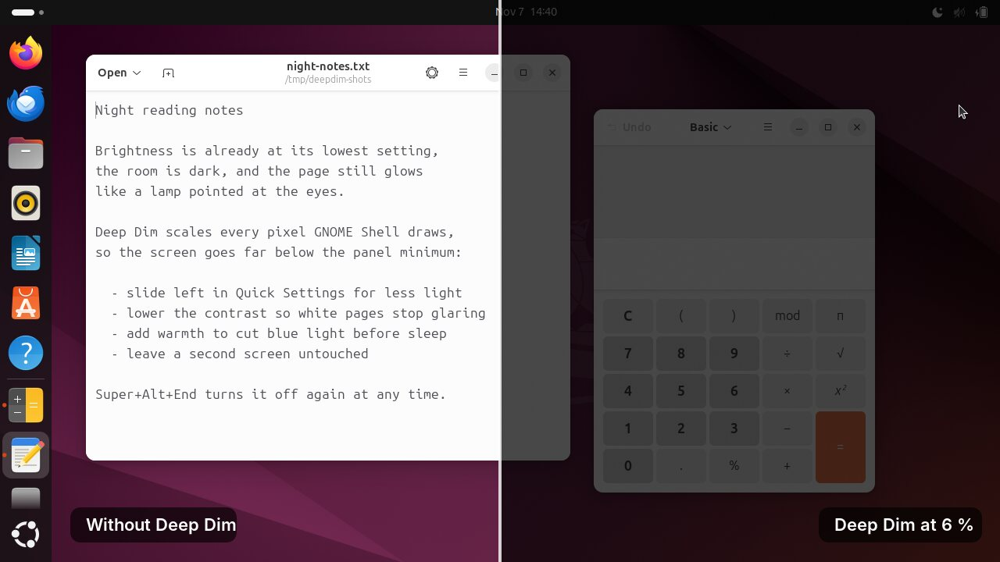
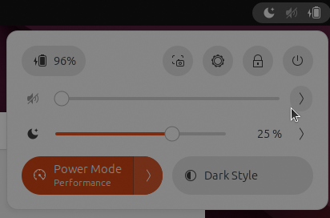
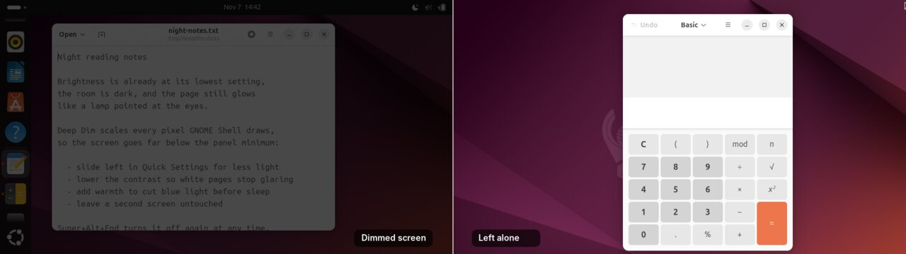

Drag the moon slider: it takes light away from this page the way Deep Dim takes it from your screen. The slider stays lit so you can always come back, like the pointer on your desktop. Press Escape to reset.
Get it from the repository extensions.gnome.org listing
The listing on extensions.gnome.org is in review. Until it is public, install from the repository.

The backlight stops. Deep Dim keeps going.
You turn the brightness all the way down in a dark room and the screen is still too bright. The panel's lowest backlight step is a hardware limit: many laptop panels and most external monitors stop well above comfortable at 2 am.
Deep Dim removes light in software, after the backlight has done all it can. Every pixel GNOME Shell draws passes through a small colour-matrix shader, so the screen can go to 10 %, 1 % or less of what the hardware minimum shows. It works on any screen: laptop panels, HDMI and DisplayPort monitors, projectors.

What it does
-
Below-minimum dimming
From full brightness down to 1 % of the light by default, configurable down to 0.05 %.
-
Lives where brightness lives
A slider in Quick Settings, right under the built-in brightness slider, with the remaining light shown as a percentage.
-
Perceptual slider
Logarithmic like the eye, so every step feels like the same change, with fine control at the dark end.
-
Contrast, colour intensity and warmth
Lower the contrast so white pages stop glaring, desaturate, or cut blue and green light.
-
Per-screen control
Dim the laptop and leave the projector alone, with a switch for each screen.
-
Keyboard shortcuts
Step darker and brighter, or turn it off, from anywhere, including full-screen apps.
-
Lock screen stays dimmed
Unlocking at night does not flash full brightness.
-
Full-screen apps stay dimmed
Games and videos cannot bypass the filter.
-
Smooth dark gradients
One level of noise at strong dimming hides colour banding.
-
Zero cost when off
The filter is removed entirely, not just made transparent.
One screen dimmed, the other left alone

From the keyboard
| Darker | Super + Alt + Page Down or Shift + Brightness Down |
|---|---|
| Brighter | Super + Alt + Page Up or Shift + Brightness Up |
| On or off | Super + Alt + End |
They work on the desktop, in the overview, in full-screen apps and on the lock screen.
Get it
For GNOME Shell 46.
git clone https://github.com/joseteo/deepdim.git cd deepdim ./install.sh